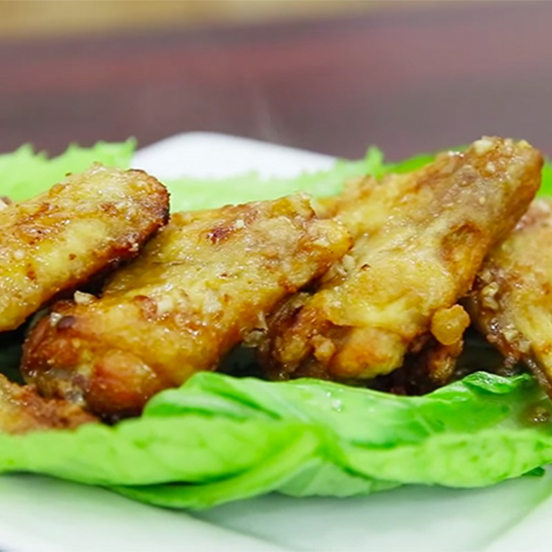

Trở về trang chủ
Công thức cánh gà chiên nước mắm
Công thức của web Điện máy xanh
Nguyên liệu
- Cánh gà
- Rau xà lách 1 cây
- Bột mì 2 muỗng canh
- Hành tím 2 củ
- Tỏi 3 tép
- Dầu ăn 3 muỗng canh
- Nước mắm 1 muỗng canh
- Đường 1 muỗng canh
Hướng dẫn
-
Cánh gà mua về rửa thật sạch với nước và để ra rổ cho ráo, để cánh gà
khi chiên được giòn và ngon hơn bạn cho 2 muỗng canh bột mì vào trộn
đều và để trong vòng 5 phút. Xà lách mua về nhặt từng lá, rửa sạch 2 -
3 lần với nước và để ra rổ. Hành và tỏi lột vỏ, rửa sơ qua nước và băm
nhuyễn.
-
Đầu tiên bắc chảo lên bếp, sau đó cho 3 muỗng canh dầu ăn vào và đun
với lửa nhỏ. Tiếp đến lấy đũa thử dầu, nếu nổi bong bóng là dầu đã
nóng, lúc này mình mới cho cánh gà vào chiên. Tiếp tục chiên cánh gà
cho đến khi vàng giòn đều hết hai mặt, sau đó cho ra dĩa và tắt bếp.
-
Phần dầu ăn trong chảo bạn lấy ra, chỉ để còn 1 lượng ít đủ để xào
hành và tỏi. Sau khi phi hành tỏi đã vàng thơm rồi thì cho vào chảo 1
muỗng canh nước mắm và 1 muỗng canh đường. Các bạn đun với lửa vừa đến
khi nước sốt sánh mịn lại, nêm nếm gia vị sao cho vừa ăn thì tắt bếp,
trang trí thêm một ít rau xà lách và rưới nước sốt lên cánh gà.
